Vansh VrikshaDesigned and built · 14 min read
An open family tree where every record says where it came from.
Vansh Vriksha is a free public family-tree archive that I designed and built on my own, where anyone can add a whole family without an account and every record says what it rests on.
- Role
- Design and build, solo
- Timeline
- August to October 2026
- For
- Families tracing their lineage, free to read and add to
- Platform
- Web, on desktop and phone
- Stack
- Next.js 15, React 19, TypeScript, Tailwind CSS 4, Zod, Netlify Blobs
- Status
- Live, running on generated demonstration data. No real-family or usage numbers to share

In short
- The problem: families keep their history in pieces, and an open tree goes wrong in quiet ways. One ancestor gets added twice, four spellings of a name never meet, and a wrong parent link is believed because it is written down.
- What I built: a public archive with a family-tree viewer, a search that understands spelling, a relationship finder in English and Konkani, and a way to add a whole family at once that waits for review.
- The key idea: a claim is only as good as what it rests on. Every person carries a source mark, every change is kept with an author, a date and a reason, and nothing is published without a person reading it.
- Where it stands: live, running on a generated set of made-up people. It does not yet establish any real family counts, and I have no usage numbers to share.

01 Why I built it
Families remember their history in pieces, and the joins go first
Most families can name four generations without help. The fifth is often just a first name and a village. After that, the proof that two branches now in different countries were once one household is gone.
But families that lose names usually keep four other things: a surname, a gotra (the ancestral sage a family line descends from, passed from father to child), a family deity and a home village. I built the archive around those four, so they work as ways in when the names run out.
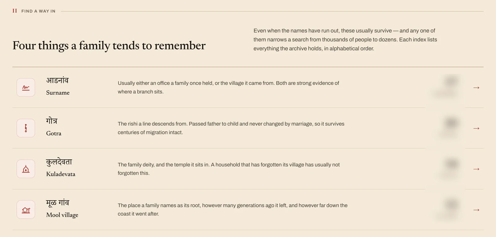
I wanted one public tree that anyone could read and add to, for free and without an account. An open tree like that has three ways to go wrong, and each one shaped a part of the design.
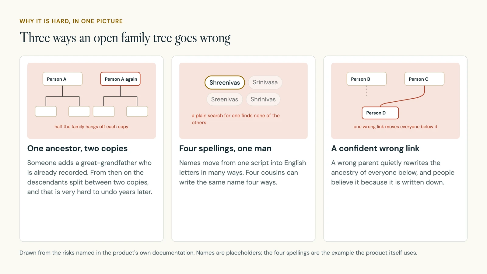
02 How it works
Three doors into one archive: read, add and review
Reading needs no account. Adding needs no account either, but what you add goes to a queue. One maintainer, behind a sign-in, decides what is published.
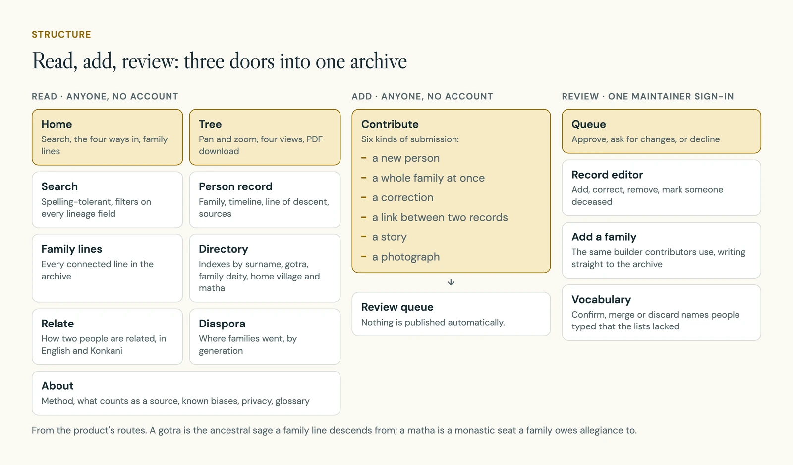
The home page asks one question: what is the one name you are sure of?
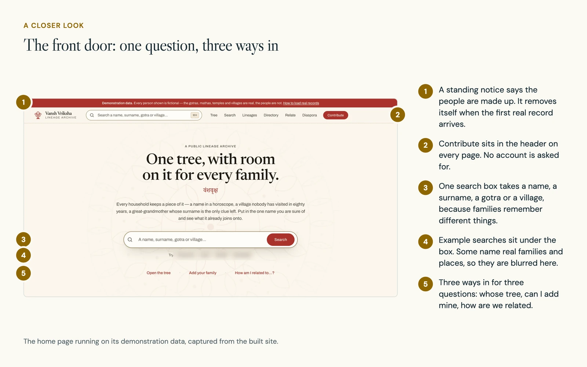
A record backed by a register and a record backed by a grandmother's memory are both worth keeping. What would ruin the archive is not being able to tell them apart, so every person carries one of four marks.
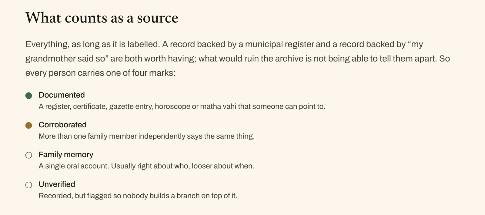
The relationship finder answers "how am I related to…?" in English and in Konkani, the language these families speak at home. English is vague in exactly the places Konkani is precise.
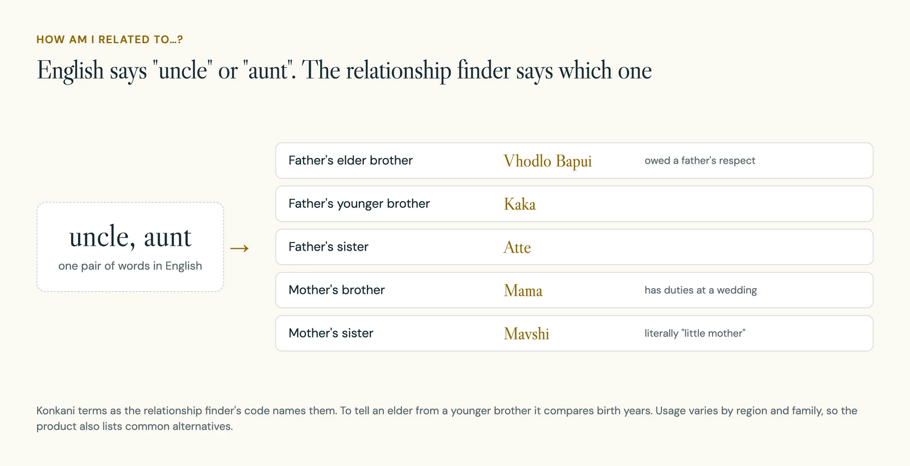
A diaspora page shows where families moved, generation by generation.
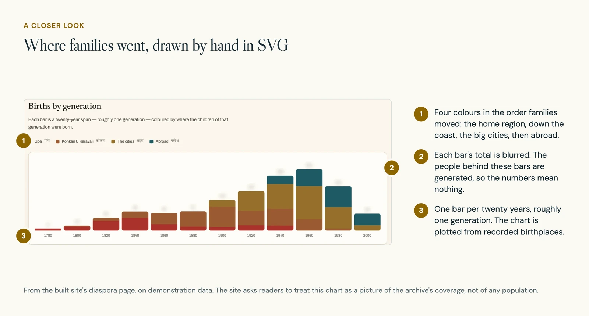
03 Decision 1
Children hang from a couple, not from one parent
What you see: a couple sits side by side, a small junction sits below them, and their children hang from the junction. A second marriage gets its own junction and its own set of children.
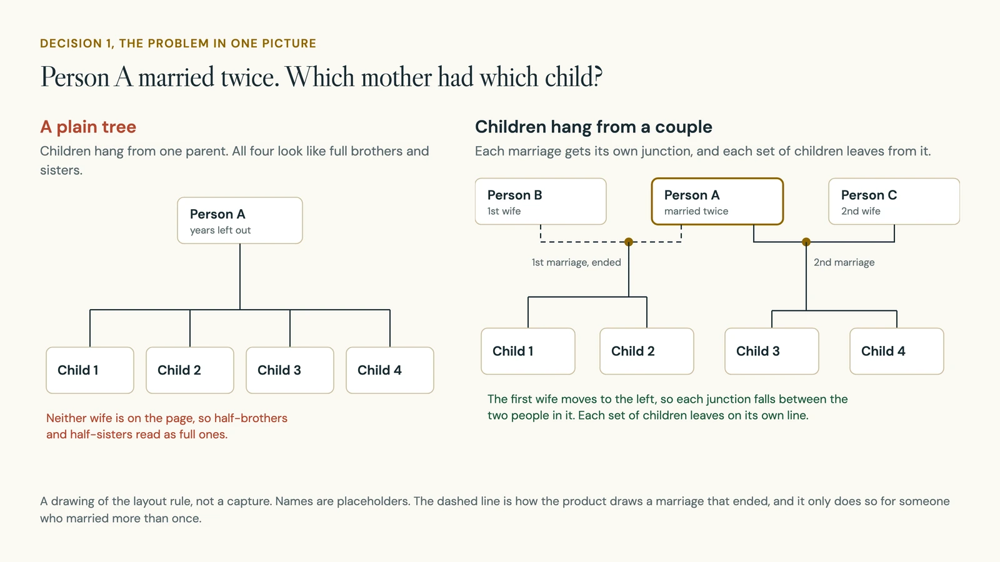
In the build: genealogy is not really a tree, because a person has two parents and can marry more than once. So the layout works on couples. It measures how wide each branch needs to be, then places it inside that width, so two cards can never overlap. There is no clean-up pass afterwards.
The layout code uses nothing from React or the server. The same code runs in the browser, so re-centring the tree on another person happens at once, with no wait for the server.
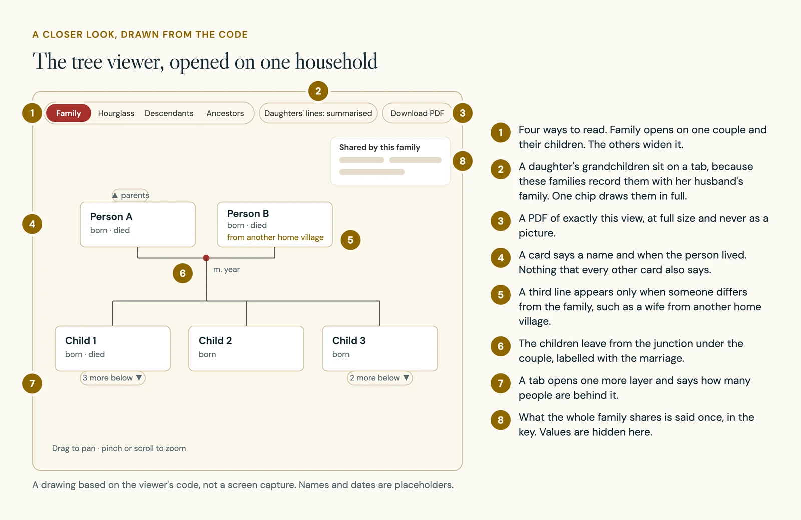
The cards themselves were too small at first. At 190 by 78 pixels a name was cut at about 14 letters, which cuts most names here in half. I made them 244 by 96 and set an order for shortening a name, so the surname is the last thing to go.
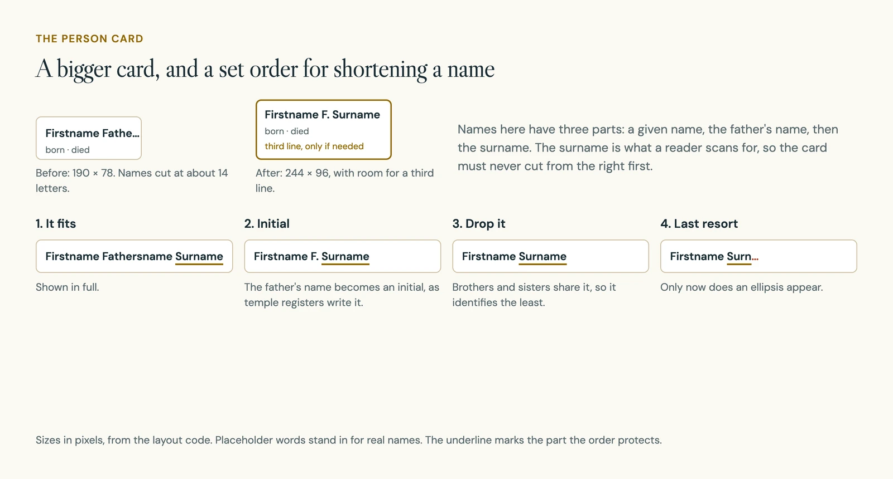
04 Decision 2
Four spellings of one name fold into one search key
What you see: type any spelling of a name and the others turn up too.
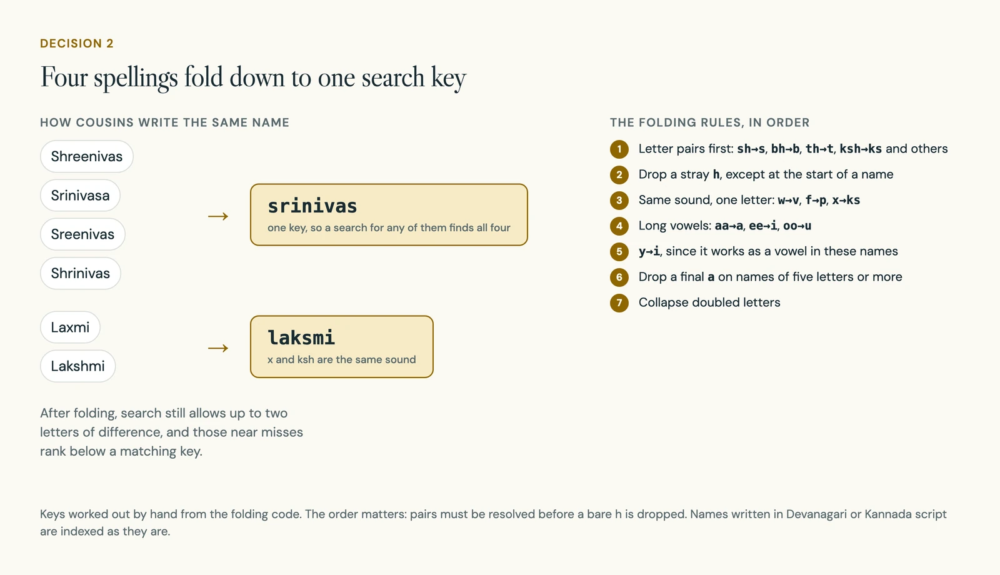
In the build: each name is stored twice in the search index, once as written and once as its folded key. A search then allows up to two letters of difference on top, and ranks those near misses lower. Some surnames split into two spellings through different colonial spelling systems rather than through speech. Folding cannot join those, so they are linked by hand.
05 Decision 3
A likely duplicate shows its reasons and offers to link, while you type
What you see: as you type a name, a box appears under the fields if the person may already be in the archive. It lists the reasons and offers one button: this is the same person.
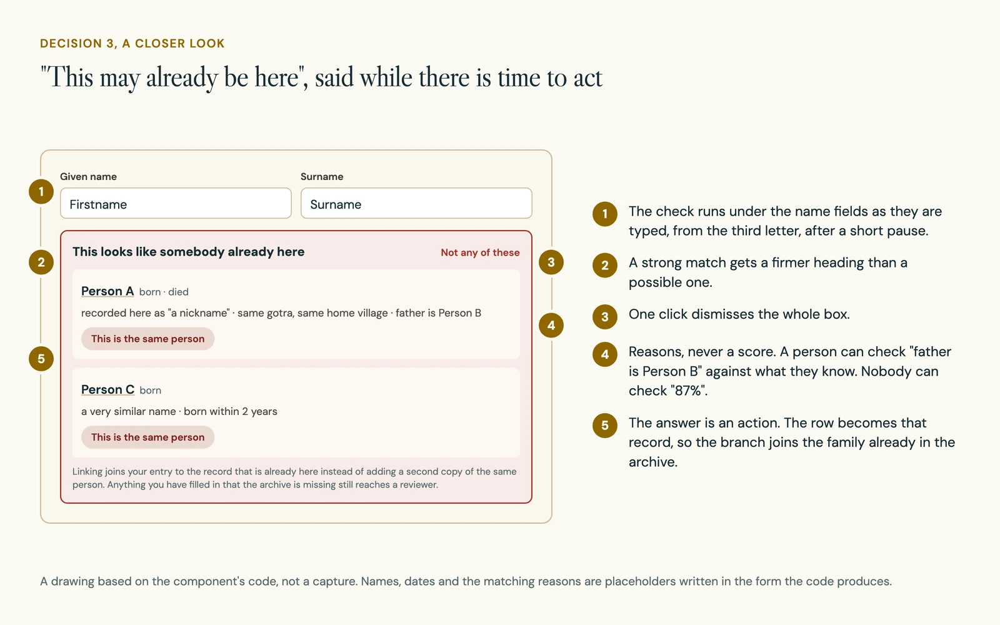
In the build: the first version warned about duplicates on the thank-you screen, after the person had finished. That was the wrong moment. The merge had become a reviewer's problem, when it could have been a two-second choice by the one person who knew.
The check compares every name a record carries, including nicknames and the name in Devanagari script, and says which one matched. Family fields count too. A matching gotra is evidence for a match. A different gotra is strong evidence against, because it passes from father to child and never changes.
The most common real contribution is not one person. It is a couple, their children, and who each child married, learned in one afternoon with an elderly relative. Sent one at a time, that is many forms, and none can name a parent who has not been published yet. So a whole family can be built on a drawing and sent as one piece.
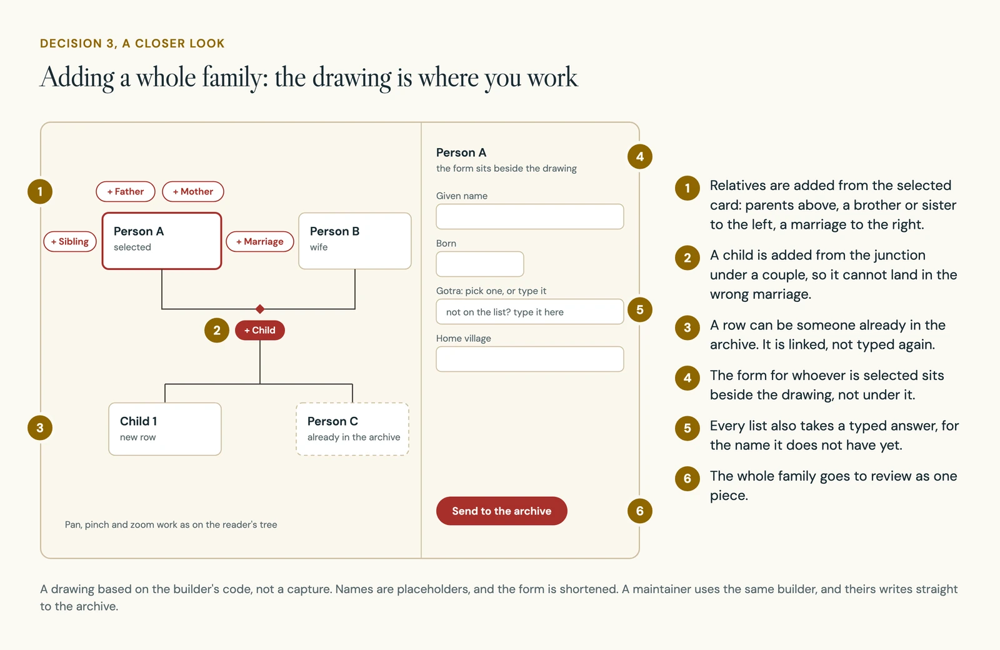
In the build: the people in a draft get temporary keys. On sending, every key becomes a real record in one pass and one write. The builder refuses true contradictions, such as a child born before their father. It only warns about unlikely ones, because real families produce records that look wrong and are not.
06 Decision 4
Records live in version control, and nothing publishes itself
What you see: after sending, a contribution waits. A maintainer can approve it, decline it, or ask for changes. Asking is the option most review queues lack, and often the only useful reply to a real memory with a date nobody can place.
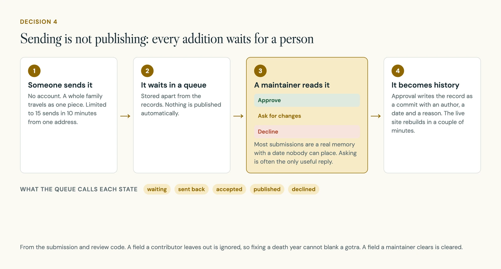
In the build: the records are plain JSON files kept in git, not rows in a database. When two cousins disagree about a birth year in twenty years' time, the history will show who claimed what and on what basis.
That promise broke when the site moved to a serverless host, where files written on the server vanish on the next restart. So a maintainer's approval is now committed to the repository on GitHub, and the push rebuilds the site. The queue of unreviewed submissions lives in separate storage, because it does not need that history until someone has read it.
A check reads the whole family graph before every build. Some mistakes are invisible in a single record and obvious across the graph.
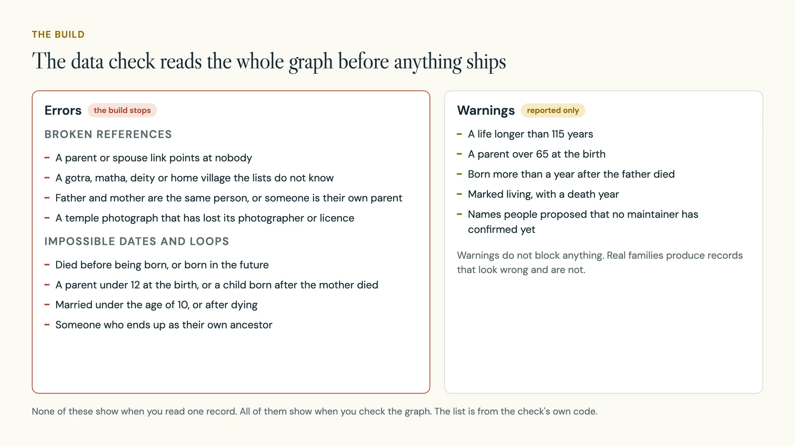
07 The build
No database, one graph in memory, and a check that blocks a broken archive
When the site starts, the whole archive is read into memory as one graph. Every interesting question, such as six generations of descendants or the path between two people, is a walk through that graph rather than a series of database queries.
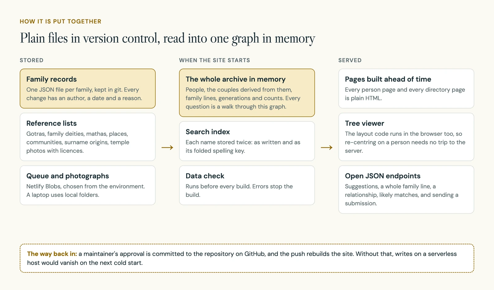
| Part | What I used |
|---|---|
| App | Next.js 15 with the App Router, React 19, TypeScript |
| Styling | Tailwind CSS 4. The tree, the charts and the ornaments are hand-written SVG |
| Records | JSON files in git, checked before every build |
| Queue and photos | Netlify Blobs |
| Input checking | Zod, on what contributors send and what the maintainer saves |
| Data libraries | None: no database, no state library, no chart library, no component library |
- 13
- commits, August to October 2026, one author
- 27,700
- lines of TypeScript, roughly
- 0
- automated tests. The data check is the only gate
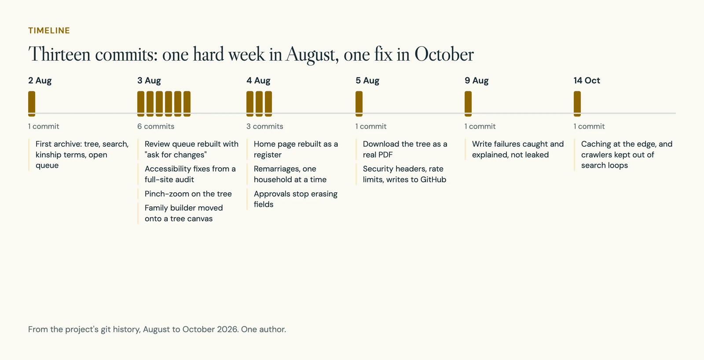
The hardest problems were not the drawing of the tree.
| Area | What went wrong, and what I changed |
|---|---|
| Saving on a serverless host | Approvals were written to a disk the host wipes on restart, so they were silently lost. They are now committed to GitHub. Raw GitHub errors also reached people's screens; every write path now catches them and shows a plain message. |
| The family builder | A "child" button under someone's parents added a brother instead of a son: the very confusion the couple layout exists to prevent. Edits made from a wife's side of a marriage were dropped. Both are fixed, and the builder now offers only the marriages the selected person is in. |
| Approvals | Approving a story about a person could reset their recorded sex, because a missing field fell back to a default. Now a field a submission does not mention is left alone. |
| Speed | The server was fast; the wait was elsewhere. Fonts came from another site and blocked the first paint, and every link in view woke the server. Fonts are now served from the site itself, prefetching is off for on-demand pages, and the diaspora page's photos went from 3.6 MB to 1.2 MB. |
08 Privacy and accessibility
Public on purpose, so the risks had to be designed for
Everything in the archive is public and found by search engines. That is the point, and it is also the risk. The rules for living people are short and stated on the site.
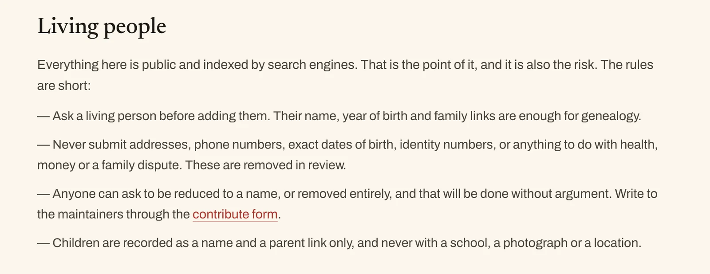
Photos needed one rule enforced by code. A phone photo carries hidden details, including where it was taken.
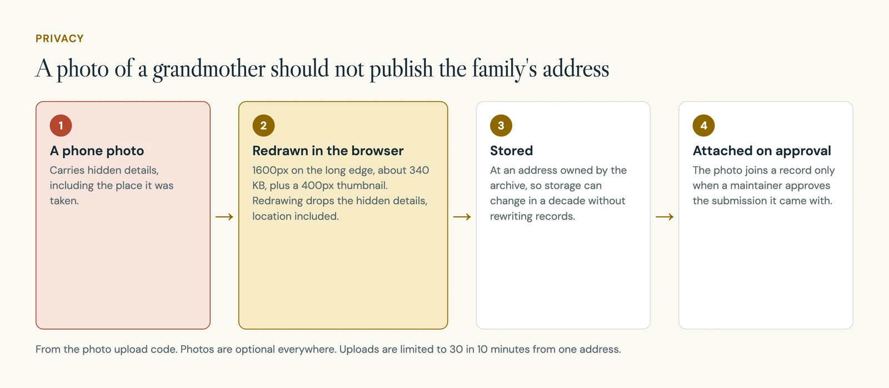
Accessibility: I ran an audit over the whole site and fixed what it found. Dialogs now hold keyboard focus and give it back when they close. The tree's view switch works from the keyboard as a proper set of options. Gender is no longer shown by colour alone. Heading order, table headers and language tags were corrected, and everything pressable is at least 48 pixels.
09 Where it stands
Live, on made-up people, with no real-family numbers
The site is live. It runs on a generated demonstration dataset: every person in it is fictional. The reference lists around them, such as gotras, temples and villages, are real. A notice on every page says so, and it removes itself when the first real record arrives.
So nothing here establishes how many real families the archive holds, and I have no usage numbers to share. The site is also honest about what any family archive misses.
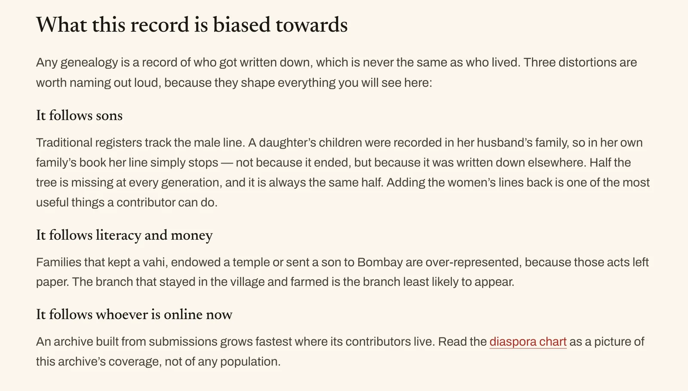
- There are no automated tests. The data check guards the records, not the interface.
- The rate limits are kept in memory per server, so they stop casual misuse, not a determined attacker.
- Several family deities still have no freely licensed photograph.
10 What is next
Real records, then real contributors
- Load real records. Importers for family-tree software files and spreadsheets already exist, and they report anything they cannot match instead of guessing.
- Proposed test: ask a family contributor to send a relationship, look at what it rests on, and correct a disputed link.
- Proposed review: tell made-up and sourced records apart in every public count, and check living people's privacy across search and sharing.
11 What I learned
The family's way of counting is a design input
The worst bugs I found were the product's own problem, handed back as a button: a child added to the wrong marriage, a wife's side of a marriage that could not be edited. Each time, the fix was to follow how these families actually count relationships, not how a tree diagram usually works.
I also learned to put a warning where someone can still act on it. The duplicate check was useless on the thank-you screen and useful under the name field.
A bank message is not always a clean transaction.